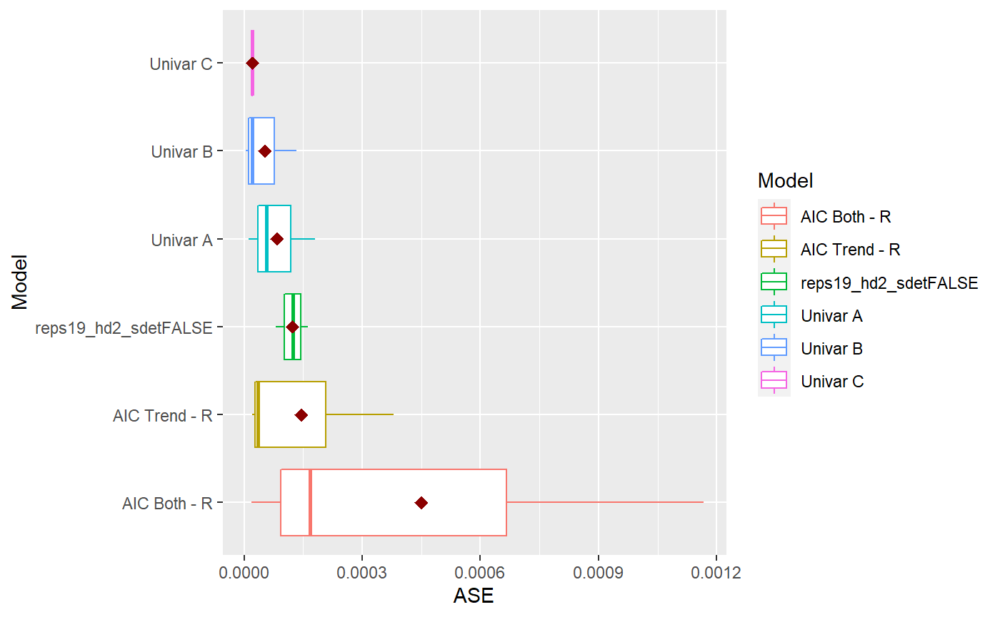
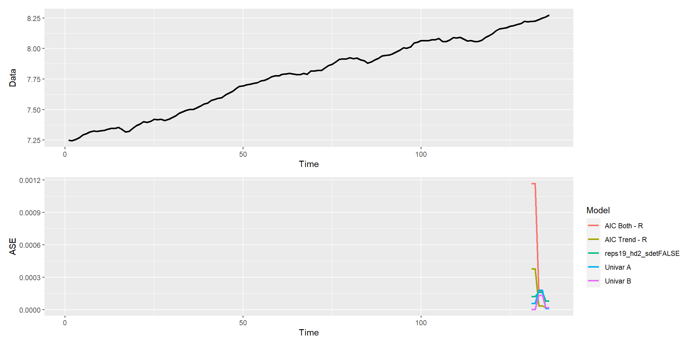
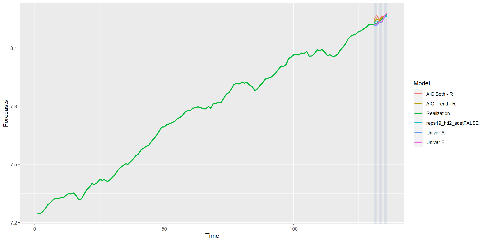
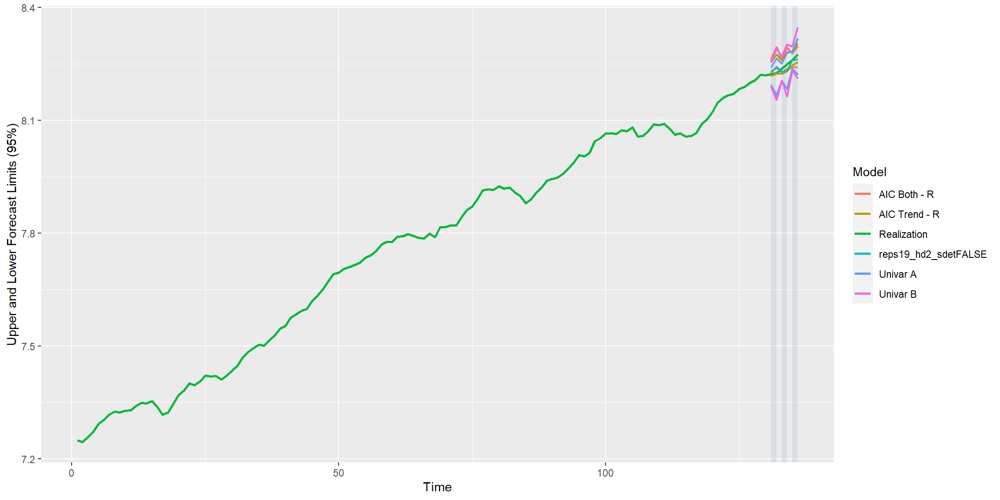

ModelCombine.Rmdlibrary(tswgewrapped)
# Load Data
file = system.file("extdata", "USeconomic.csv", package = "tswgewrapped", mustWork = TRUE)
USeconomic = read.csv(file, header = TRUE, stringsAsFactors = FALSE, check.names = FALSE)
names(USeconomic) = gsub("[(|)]", "", colnames(USeconomic))
data = USeconomicmodels = list("Univar A" = list(phi = 0.9, d = 1, s = 0, sliding_ase = TRUE),
"Univar B" = list(phi = 0.9, d = 1, s = 4, sliding_ase = TRUE),
"Univar C" = list(phi = 0.9, d = 1, s = 4, sliding_ase = FALSE)
)
mdl_compare_uni = ModelCompareUnivariate$new(data = data, var_interest = var_interest, mdl_list = models,
n.ahead = n.ahead, batch_size = batch_size)
#>
#> Batch Size has not been specified. Will assume a single batch.NULLlag.max = 10
models = list("AIC None" = list(select = "aic", trend_type = "none", lag.max = lag.max),
"AIC Trend" = list(select = "aic", trend_type = "trend", lag.max = lag.max),
"AIC Both" = list(select = "aic", trend_type = "both", lag.max = lag.max))
mdl_build_var = ModelBuildMultivariateVAR$new(data = data, var_interest = var_interest,
mdl_list = models, verbose = 0)
#> Warning: Expected 2 pieces. Missing pieces filled with `NA` in 1 rows [4].
mdl_build_var$build_recommended_models()
#> Warning in mdl_build_var$build_recommended_models(): This recommendation
#> is to use just the variable of interest (dependent variable) to model the
#> time series, hence this model will not be built. Please use a univariate
#> approach to model this separately.
models = mdl_build_var$get_final_models(subset = 'r')
# Setup Models to be compared with sliding ASE = TRUE
for (name in names(models)){
models[[name]][['sliding_ase']] = TRUE
}
# Initialize the ModelCompareMultivariateVAR object
mdl_compare_var = ModelCompareMultivariateVAR$new(data = data, var_interest = var_interest,
mdl_list = models, n.ahead = n.ahead, batch_size = batch_size, verbose = 0)
#> # A tibble: 2 x 6
#> Model Trend Season SlidingASE Init_K Final_K
#>
#> 1 AIC Both - R both 0 TRUE 3 3
#> 2 AIC Trend - R trend 0 TRUE 1 1 Since this process takes some time, I have commented this out for now and saved an already created caret model. However, feel free to uncomment this and run the model build process.
# library(caret)
#
# # Random Parallel
# model = ModelBuildNNforCaret$new(data = data, var_interest = "logGNP", m = 2,
# search = 'random',
# grid = NA, tuneLength = 2,
# batch_size = 132, h = 2,
# parallel = TRUE,
# seed = 1,
# verbose = 1)
#
# model$summarize_hyperparam_results()
# caret_model = model$get_final_models(subset = 'a')
file = system.file("extdata", "caret_model_batch_ase.rds", package = "tswgewrapped", mustWork = TRUE)
caret_model = readRDS(file)
# Initialize the ModelCompareMultivariateVAR object
mdl_compare_mlp = ModelCompareNNforCaret$new(data = data, var_interest = var_interest,
mdl_list = caret_model,
verbose = 1)
#>
#> Computing metrics for: reps15_hd5_sdetFALSE
#> Warning in private$models[[name]]$ASEs = res$ASEs: Coercing LHS to a list
#>
#> Computing metrics for: reps19_hd2_sdetFALSE
#> Warning in private$models[[name]]$ASEs = res$ASEs: Coercing LHS to a list
#> NULLmdl_combine = ModelCombine$new(data = data, var_interest = "logGNP",
uni_models = mdl_compare_uni, var_models = mdl_compare_var, mlp_models = mdl_compare_mlp,
verbose = 1)mdl_combine$plot_boxplot_ases()

comparison = mdl_combine$statistical_compare() #> Loading required namespace: patchwork #> Df Sum Sq Mean Sq F value Pr(>F) #> Model 4 3.082e-07 7.705e-08 0.865 0.517 #> Residuals 10 8.903e-07 8.903e-08 #> #> #> Tukey multiple comparisons of means #> 95% family-wise confidence level #> #> Fit: aov(formula = ASE ~ Model, data = results) #> #> $Model #> diff lwr #> AIC Trend - R-AIC Both - R -3.050861e-04 -0.0011068903 #> reps19_hd2_sdetFALSE-AIC Both - R -3.280151e-04 -0.0011298193 #> Univar A-AIC Both - R -3.671261e-04 -0.0011689303 #> Univar B-AIC Both - R -3.974854e-04 -0.0011992896 #> reps19_hd2_sdetFALSE-AIC Trend - R -2.292902e-05 -0.0008247332 #> Univar A-AIC Trend - R -6.203999e-05 -0.0008638442 #> Univar B-AIC Trend - R -9.239935e-05 -0.0008942036 #> Univar A-reps19_hd2_sdetFALSE -3.911096e-05 -0.0008409152 #> Univar B-reps19_hd2_sdetFALSE -6.947033e-05 -0.0008712746 #> Univar B-Univar A -3.035936e-05 -0.0008321636 #> upr p adj #> AIC Trend - R-AIC Both - R 0.0004967182 0.7235876 #> reps19_hd2_sdetFALSE-AIC Both - R 0.0004737891 0.6713829 #> Univar A-AIC Both - R 0.0004346782 0.5806934 #> Univar B-AIC Both - R 0.0004043188 0.5116637 #> reps19_hd2_sdetFALSE-AIC Trend - R 0.0007788752 0.9999788 #> Univar A-AIC Trend - R 0.0007397642 0.9989039 #> Univar B-AIC Trend - R 0.0007094049 0.9948724 #> Univar A-reps19_hd2_sdetFALSE 0.0007626933 0.9998224 #> Univar B-reps19_hd2_sdetFALSE 0.0007323339 0.9982948 #> Univar B-Univar A 0.0007714449 0.9999351
ases = mdl_combine$get_tabular_metrics() ases #> # A tibble: 16 x 5 #> Model ASE Time_Test_Start Time_Test_End Batch #>#> 1 Univar A 0.0000575 131 132 1 #> 2 Univar A 0.000180 133 134 2 #> 3 Univar A 0.0000124 135 136 3 #> 4 Univar B 0.00000362 131 132 1 #> 5 Univar B 0.000134 133 134 2 #> 6 Univar B 0.0000212 135 136 3 #> 7 Univar C 0.0000212 135 136 1 #> 8 AIC Both - R 0.00117 131 132 1 #> 9 AIC Both - R 0.000167 133 134 2 #> 10 AIC Both - R 0.0000180 135 136 3 #> 11 AIC Trend - R 0.000379 131 132 1 #> 12 AIC Trend - R 0.0000354 133 134 2 #> 13 AIC Trend - R 0.0000212 135 136 3 #> 14 reps19_hd2_sdetFALSE 0.000124 131 132 1 #> 15 reps19_hd2_sdetFALSE 0.000163 133 134 2 #> 16 reps19_hd2_sdetFALSE 0.0000810 135 136 3
mdl_combine$plot_batch_ases() #> Warning: Removed 650 row(s) containing missing values (geom_path).

forecasts = mdl_combine$get_tabular_metrics(ases = FALSE) forecasts #> # A tibble: 958 x 5 #> Model Time f ll ul #>#> 1 Univar A 1 NA NA NA #> 2 Univar A 2 NA NA NA #> 3 Univar A 3 NA NA NA #> 4 Univar A 4 NA NA NA #> 5 Univar A 5 NA NA NA #> 6 Univar A 6 NA NA NA #> 7 Univar A 7 NA NA NA #> 8 Univar A 8 NA NA NA #> 9 Univar A 9 NA NA NA #> 10 Univar A 10 NA NA NA #> # ... with 948 more rows
mdl_combine$plot_batch_forecasts() #> Warning: Removed 520 row(s) containing missing values (geom_path).

#> Warning: Removed 520 row(s) containing missing values (geom_path).
#> Warning: Removed 520 row(s) containing missing values (geom_path).